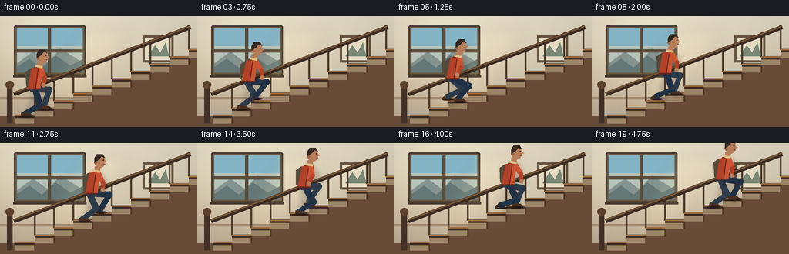
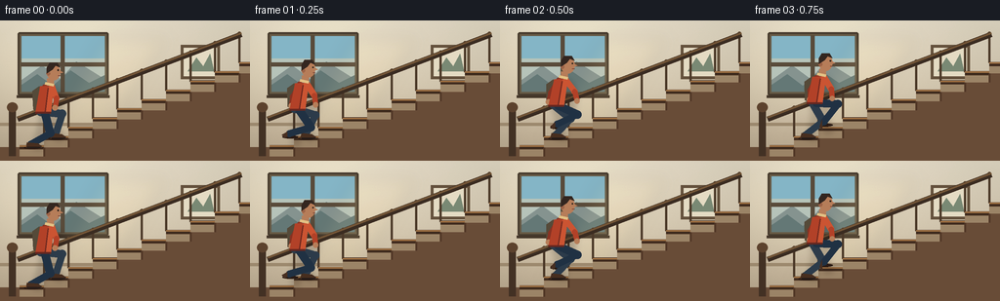
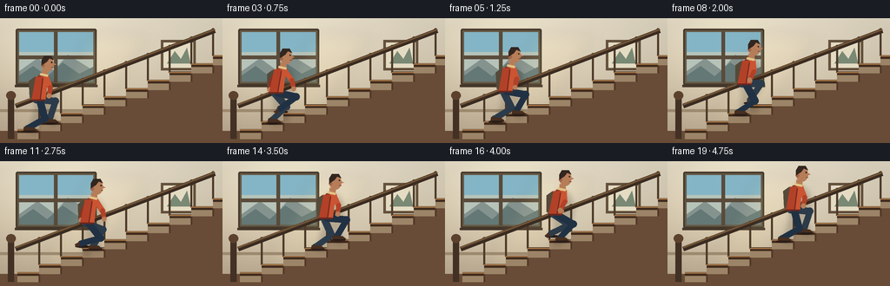
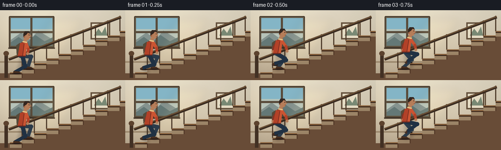

CODING AGENTS AS PIXEL WORLD MODELS
traex/GPT-5.6-Sol · motion_rationality_0034
点击播放 · 原生 RGB 像素
逐轮保存的候选
回放视频、检查图与代码变化。
每份候选均可单独播放。实际图片检查记录在下方工具轨迹中。
候选 01播放与检查图
点击播放 · 原生 RGB 像素


展开代码变化
--- 上一保存版本
+++ 本次保存版本
@@ -0,0 +1,283 @@
+from pathlib import Path
+import math
+import numpy as np
+from PIL import Image, ImageDraw, ImageFilter
+import artifact_io
+
+# Deterministic hand-rendered animation. Geometry is authored at 3x and
+# downsampled, giving clean, softly antialiased 256x144 frames.
+W, H, N = 256, 144, 20
+S = 3
+rng = np.random.default_rng(34)
+
+
+def sc(v):
+ return int(round(v * S))
+
+
+def pts(seq):
+ return [(sc(x), sc(y)) for x, y in seq]
+
+
+def line(draw, seq, fill, width, joint="curve"):
+ draw.line(pts(seq), fill=fill, width=sc(width), joint=joint)
+
+
+def ellipse(draw, box, fill, outline=None, width=1):
+ draw.ellipse(tuple(sc(x) for x in box), fill=fill, outline=outline, width=sc(width) if outline else 1)
+
+
+def polygon(draw, seq, fill):
+ draw.polygon(pts(seq), fill=fill)
+
+
+def limb(draw, a, b, color, width):
+ """Rounded, slightly tapered-looking limb segment."""
+ line(draw, [a, b], color, width)
+ r = width / 2
+ ellipse(draw, (a[0]-r, a[1]-r, a[0]+r, a[1]+r), color)
+ ellipse(draw, (b[0]-r, b[1]-r, b[0]+r, b[1]+r), color)
+
+
+def ease(u):
+ return u*u*(3-2*u)
+
+
+def stair_point(i):
+ return np.array([31.5 + 25.0*i, 130.0 - 9.5*i], dtype=float)
+
+
+def feet_for_progress(g):
+ # Feet begin on adjacent treads. Every beat, the trailing foot moves two
+ # stairs ahead, while the other foot remains firmly planted.
+ if g >= 5:
+ event, u = 4, 1.0
+ else:
+ event, u = int(math.floor(g)), g % 1.0
+ li, ri = 0, 1
+ for j in range(event):
+ if j % 2 == 0:
+ li += 2
+ else:
+ ri += 2
+ le, re = float(li), float(ri)
+ moving = 'L' if event % 2 == 0 else 'R'
+ q = ease(u)
+ if moving == 'L':
+ le = li + 2*q
+ else:
+ re = ri + 2*q
+ lp_nom = stair_point(le)
+ rp_nom = stair_point(re)
+ lp, rp = lp_nom.copy(), rp_nom.copy()
+ lift = 10.5 * math.sin(math.pi*u)
+ if moving == 'L':
+ lp[1] -= lift
+ else:
+ rp[1] -= lift
+ return lp, rp, lp_nom, rp_nom, moving, u
+
+
+def knee_ik(hip, ankle, l1=22.0, l2=23.0):
+ hip, ankle = np.array(hip), np.array(ankle)
+ dvec = ankle - hip
+ d = float(np.linalg.norm(dvec))
+ d = min(max(d, 1e-3), l1+l2-0.1)
+ v = dvec / max(np.linalg.norm(dvec), 1e-3)
+ a = (l1*l1 - l2*l2 + d*d)/(2*d)
+ h = math.sqrt(max(0.0, l1*l1-a*a))
+ p = hip + a*v
+ perp = np.array([-v[1], v[0]])
+ c1, c2 = p+h*perp, p-h*perp
+ # Knees bend in the direction of travel (to the right).
+ return c1 if c1[0] > c2[0] else c2
+
+
+def make_background():
+ # Warm plaster wall gradient with a fixed subtle grain.
+ yy, xx = np.mgrid[0:H*S, 0:W*S]
+ top = np.array([224, 216, 197], dtype=float)
+ bot = np.array([185, 169, 145], dtype=float)
+ v = (yy/(H*S-1))[..., None]
+ arr = top*(1-v) + bot*v
+ # window glow and vignette
+ glow = np.exp(-(((xx-sc(67))/sc(92))**2 + ((yy-sc(39))/sc(70))**2))[..., None]
+ arr += glow*np.array([18, 17, 12])
+ vign = ((xx-W*S/2)/(W*S/2))**2 + ((yy-H*S/2)/(H*S/2))**2
+ arr -= np.clip(vign[..., None]*8, 0, 13)
+ noise = rng.normal(0, 0.8, (H*S, W*S, 1))
+ arr = np.clip(arr+noise, 0, 255).astype(np.uint8)
+ im = Image.fromarray(arr, 'RGB')
+ d = ImageDraw.Draw(im)
+
+ # Large landing window, blue exterior, mullions, and golden light.
+ d.rounded_rectangle((sc(18), sc(12), sc(111), sc(77)), radius=sc(2), fill=(104,92,72), outline=(72,61,48), width=sc(2))
+ d.rectangle((sc(22),sc(16),sc(107),sc(73)), fill=(137,178,188))
+ # sky gradient-like bands and distant softened architecture
+ d.rectangle((sc(22),sc(16),sc(107),sc(39)), fill=(132,180,196))
+ d.rectangle((sc(22),sc(39),sc(107),sc(73)), fill=(181,193,184))
+ polygon(d, [(22,61),(43,46),(62,60),(78,42),(107,60),(107,73),(22,73)], (133,147,143))
+ polygon(d, [(22,66),(38,55),(54,67),(72,51),(91,64),(107,56),(107,73),(22,73)], (101,121,119))
+ d.rectangle((sc(62),sc(15),sc(66),sc(74)), fill=(91,77,61))
+ d.rectangle((sc(21),sc(43),sc(108),sc(47)), fill=(91,77,61))
+ line(d, [(17,78),(112,78)], (71,58,45), 3)
+ # A soft diagonal shaft of sunshine over the wall.
+ light = Image.new('RGBA', im.size, (0,0,0,0)); ld = ImageDraw.Draw(light)
+ ld.polygon(pts([(105,17),(172,17),(106,124),(45,124)]), fill=(255,229,162,20))
+ light = light.filter(ImageFilter.GaussianBlur(sc(8)))
+ im = Image.alpha_composite(im.convert('RGBA'), light).convert('RGB')
+ d = ImageDraw.Draw(im)
+
+ # Framed print and wall trim establish an interior space.
+ d.rectangle((sc(185),sc(25),sc(225),sc(60)), fill=(102,83,63))
+ d.rectangle((sc(188),sc(28),sc(222),sc(57)), fill=(225,216,193))
+ polygon(d, [(192,52),(201,38),(208,47),(215,34),(219,52)], (122,137,117))
+ d.rectangle((0,sc(105),W*S,sc(108)), fill=(156,137,111))
+
+ # Far-side railing sits behind the walker.
+ rail = (79,61,45)
+ for i in range(1,10):
+ x = 20 + 25*i
+ tread_y = 130 - 9.5*i
+ rail_y = 99 - 9.5*i
+ line(d, [(x, tread_y-1),(x,rail_y)], rail, 2.2)
+ ellipse(d,(x-2,rail_y-2,x+2,rail_y+2),(102,79,56))
+ line(d, [(18,101),(247,14)], (61,47,37), 6)
+ line(d, [(18,99.5),(247,12.5)], (117,88,58), 2)
+
+ # Stair mass and individual wooden treads / cream risers.
+ stairs = [(0,144),(0,130),(45,130)]
+ for i in range(1,10):
+ stairs.extend([(20+25*i,130-9.5*(i-1)), (20+25*i,130-9.5*i), (45+25*i,130-9.5*i)])
+ stairs.extend([(256,44),(256,144)])
+ polygon(d, stairs, (105,78,58))
+ for i in range(10):
+ x1, x2 = 20+25*i, 45+25*i
+ y = 130-9.5*i
+ # riser face
+ polygon(d, [(x1,y),(x2,y),(x2,y+9.5),(x1,y+9.5)], (155,132,104))
+ line(d, [(x1,y),(x2+1,y)], (67,47,34), 4.2)
+ line(d, [(x1,y-1.2),(x2+1,y-1.2)], (172,124,76), 1.4)
+ line(d, [(x2,y),(x2,y+9.5)], (83,58,42), 2)
+ # foreground newel post
+ d.rectangle((sc(9),sc(88),sc(16),sc(139)), fill=(69,52,40))
+ ellipse(d,(7,84,18,94),(94,69,49))
+ return im
+
+
+BG = make_background()
+
+
+def draw_character(base, frame_index):
+ im = base.convert('RGBA')
+ g = 5.0*frame_index/(N-1)
+ lp, rp, lnom, rnom, moving, u = feet_for_progress(g)
+ nom_mid = (lnom+rnom)/2
+ bounce = 1.8*math.sin(math.pi*u)
+ pelvis = np.array([nom_mid[0], nom_mid[1]-31.0-bounce])
+ lean = 4.0 + 1.0*math.sin(math.pi*u)
+ shoulder = pelvis + np.array([lean, -29.0])
+
+ # Soft moving shadow on wall/stairs gives body weight without motion blur.
+ sh = Image.new('RGBA', im.size, (0,0,0,0)); sd = ImageDraw.Draw(sh)
+ ellipse(sd,(pelvis[0]-11+5,pelvis[1]-32+4,pelvis[0]+16+5,pelvis[1]+11+4),(38,26,20,52))
+ line(sd, [(pelvis[0]+3,pelvis[1]),(lnom[0]+6,lnom[1]+2)], (35,24,19,46), 9)
+ line(sd, [(pelvis[0]+3,pelvis[1]),(rnom[0]+6,rnom[1]+2)], (35,24,19,46), 9)
+ sh = sh.filter(ImageFilter.GaussianBlur(sc(3)))
+ im = Image.alpha_composite(im,sh)
+ d = ImageDraw.Draw(im)
+
+ # Contact shadows are strongest under planted shoes.
+ for p, name in [(lp,'L'),(rp,'R')]:
+ alpha = 55 if name != moving or u < .08 or u > .92 else 18
+ ellipse(d,(p[0]-7,p[1]-1,p[0]+9,p[1]+2),(45,30,23,alpha))
+
+ # Determine depth consistently: right leg is farther from the viewer.
+ hips = {'L': pelvis + np.array([1.8,0]), 'R':pelvis + np.array([-2.4,-0.5])}
+ feet = {'L':lp, 'R':rp}
+ legcols = {'L':(36,52,70,255), 'R':(47,62,76,255)}
+
+ # Rear leg, then front leg. IK keeps the knees and soles coherent.
+ for name in ['R','L']:
+ hip = hips[name]
+ ankle = feet[name] + np.array([0,-3.0])
+ knee = knee_ik(hip,ankle)
+ col = legcols[name]
+ limb(d,hip,knee,col,8.2)
+ limb(d,knee,ankle,col,7.0)
+ # warm leather shoe; always levels on landing near contact
+ shoe_y = feet[name][1]
+ if name == moving and .10 < u < .90:
+ angle = math.atan2(ankle[1]-knee[1], ankle[0]-knee[0])
+ dx, dy = math.cos(angle)*8, math.sin(angle)*8
+ polygon(d,[(ankle[0]-2,ankle[1]-2),(ankle[0]+dx,ankle[1]+dy-1),
+ (ankle[0]+dx+3,ankle[1]+dy+2),(ankle[0]-2,ankle[1]+3)],(74,50,37,255))
+ else:
+ polygon(d,[(ankle[0]-4,shoe_y-5),(ankle[0]+7,shoe_y-4),(ankle[0]+11,shoe_y-1),
+ (ankle[0]+10,shoe_y+1),(ankle[0]-5,shoe_y+1)],(73,49,35,255))
+ line(d,[(ankle[0]-4,shoe_y),(ankle[0]+10,shoe_y)],(39,31,28,255),1.3)
+
+ phase = math.sin(math.pi*g)
+ skin=(181,126,91,255)
+ jacket_dark=(135,54,39,255)
+ jacket=(177,68,43,255)
+ jacket_hi=(201,86,53,255)
+
+ # Backpack and rear arm.
+ polygon(d,[(shoulder[0]-8,shoulder[1]+2),(shoulder[0]-15,shoulder[1]+7),
+ (pelvis[0]-10,pelvis[1]-3),(pelvis[0]-3,pelvis[1]+1),(shoulder[0]-1,shoulder[1]+8)],(87,76,60,255))
+ line(d,[(shoulder[0]-4,shoulder[1]+3),(pelvis[0]-2,pelvis[1]-3)],(57,48,40,255),2)
+ rear_sh = shoulder + np.array([-2.0,3.0])
+ rear_hand = rear_sh + np.array([-8.0*phase-3,22.0])
+ rear_elbow = (rear_sh+rear_hand)/2 + np.array([-3,2])
+ limb(d,rear_sh,rear_elbow,jacket_dark,6.0); limb(d,rear_elbow,rear_hand,jacket_dark,5.2)
+ ellipse(d,(rear_hand[0]-2.7,rear_hand[1]-2.5,rear_hand[0]+2.7,rear_hand[1]+3),skin)
+
+ # Torso with forward lean and hem movement.
+ polygon(d,[(shoulder[0]-7,shoulder[1]+2),(shoulder[0]+7,shoulder[1]+1),
+ (pelvis[0]+8,pelvis[1]+1),(pelvis[0]-8,pelvis[1]+1)],jacket)
+ polygon(d,[(shoulder[0]+2,shoulder[1]+2),(shoulder[0]+7,shoulder[1]+1),
+ (pelvis[0]+8,pelvis[1]+1),(pelvis[0]+3,pelvis[1])],jacket_hi)
+ line(d,[(shoulder[0]+1,shoulder[1]+4),(pelvis[0]+2,pelvis[1]-1)],(113,45,36,255),1.2)
+ line(d,[(pelvis[0]-8,pelvis[1]),(pelvis[0]+8,pelvis[1])],(104,43,36,255),2)
+
+ # Front arm swings opposite to the rear arm.
+ front_sh = shoulder + np.array([5.2,3.0])
+ front_hand = front_sh + np.array([8.0*phase+3,21.0])
+ front_elbow = (front_sh+front_hand)/2 + np.array([3,1])
+ limb(d,front_sh,front_elbow,jacket_hi,6.2); limb(d,front_elbow,front_hand,jacket,5.2)
+ ellipse(d,(front_hand[0]-2.7,front_hand[1]-2.5,front_hand[0]+2.7,front_hand[1]+3),skin)
+
+ # Neck and profile head looking upward in direction of travel.
+ neck = shoulder + np.array([3,-3])
+ polygon(d,[(neck[0]-3,neck[1]-3),(neck[0]+4,neck[1]-3),(neck[0]+4,neck[1]+4),(neck[0]-3,neck[1]+4)],skin)
+ hc = shoulder + np.array([6.7,-12.0])
+ ellipse(d,(hc[0]-7,hc[1]-9,hc[0]+7,hc[1]+8),skin)
+ # nose profile, ear, hair and simple facial marks
+ polygon(d,[(hc[0]+5,hc[1]-3),(hc[0]+10,hc[1]),(hc[0]+5.5,hc[1]+1.2)],skin)
+ ellipse(d,(hc[0]-7.3,hc[1]-1,hc[0]-3.5,hc[1]+3.2),(157,101,73,255))
+ polygon(d,[(hc[0]-7,hc[1]-5),(hc[0]-4,hc[1]-10),(hc[0]+4,hc[1]-10),
+ (hc[0]+7,hc[1]-5),(hc[0]+2,hc[1]-7),(hc[0]-1,hc[1]-3),(hc[0]-7,hc[1]+1)],(54,42,36,255))
+ ellipse(d,(hc[0]+4,hc[1]-3.1,hc[0]+5.4,hc[1]-1.7),(45,35,30,255))
+ line(d,[(hc[0]+4.5,hc[1]+3),(hc[0]+7,hc[1]+3)],(112,61,52,255),.8)
+ # scarf collar
+ line(d,[(shoulder[0]-2,shoulder[1]-1),(shoulder[0]+7,shoulder[1]+1)],(224,191,132,255),3)
+
+ return im.convert('RGB')
+
+
+def main():
+ frames=[]
+ for i in range(N):
+ frame_hi=draw_character(BG.copy(),i)
+ frame=frame_hi.resize((W,H),Image.Resampling.LANCZOS)
+ # mild cinematic contrast/clarity adjustment
+ arr=np.asarray(frame,dtype=np.float32)
+ arr=(arr-128)*1.035+128
+ frames.append(np.clip(arr,0,255).astype(np.uint8))
+ frames=np.stack(frames)
+ artifact_io.save(frames,Path(__file__).resolve().parent)
+ print(f"saved {len(frames)} RGB frames, {frames.shape[2]}x{frames.shape[1]}")
+
+if __name__=='__main__':
+ main()
候选 02播放与检查图
点击播放 · 原生 RGB 像素


展开代码变化
--- 上一保存版本
+++ 本次保存版本
@@ -107,7 +107,7 @@
arr -= np.clip(vign[..., None]*8, 0, 13)
noise = rng.normal(0, 0.8, (H*S, W*S, 1))
arr = np.clip(arr+noise, 0, 255).astype(np.uint8)
- im = Image.fromarray(arr, 'RGB')
+ im = Image.fromarray(arr)
d = ImageDraw.Draw(im)
# Large landing window, blue exterior, mullions, and golden light.
@@ -170,7 +170,9 @@
def draw_character(base, frame_index):
im = base.convert('RGBA')
- g = 5.0*frame_index/(N-1)
+ # Four complete stair transfers keep the full figure inside the fixed
+ # composition from first contact through the final planted pose.
+ g = 4.0*frame_index/(N-1)
lp, rp, lnom, rnom, moving, u = feet_for_progress(g)
nom_mid = (lnom+rnom)/2
bounce = 1.8*math.sin(math.pi*u)
可观测工具轨迹
实际执行的命令与返回图片。
命令 1exit 0
/bin/bash -lc "ls -la && printf '\\n--- prompt.txt ---\\n' && cat prompt.txt && printf '\\n--- GENERATION_RULES.md ---\\n' && cat GENERATION_RULES.md && printf '\\n--- task_spec.json ---\\n' && cat task_spec.json"
命令 2exit 0
/bin/bash -lc "find . -maxdepth 2 -type f -printf '%p %s bytes\\n' | sort"
命令 3exit 0
/bin/bash -lc "sed -n '1,260p' artifact_io.py"
命令 4exit 0
/bin/bash -lc "cat > generate.py <<'PY'
from pathlib import Path
import math
import numpy as np
from PIL import Image, ImageDraw, ImageFilter
import artifact_io
# Deterministic hand-rendered animation. Geometry is authored at 3x and
# downsampled, giving clean, softly antialiased 256x144 frames.
W, H, N = 256, 144, 20
S = 3
rng = np.random.default_rng(34)
def sc(v):
return int(round(v * S))
def pts(seq):
return [(sc(x), sc(y)) for x, y in seq]
def line(draw, seq, fill, width, joint=\"curve\"):
draw.line(pts(seq), fill=fill, width=sc(width), joint=joint)
def ellipse(draw, box, fill, outline=None, width=1):
draw.ellipse(tuple(sc(x) for x in box), fill=fill, outline=outline, width=sc(width) if outline else 1)
def polygon(draw, seq, fill):
draw.polygon(pts(seq), fill=fill)
def limb(draw, a, b, color, width):
\"\"\"Rounded, slightly tapered-looking limb segment.\"\"\"
line(draw, [a, b], color, width)
r = width / 2
ellipse(draw, (a[0]-r, a[1]-r, a[0]+r, a[1]+r), color)
ellipse(draw, (b[0]-r, b[1]-r, b[0]+r, b[1]+r), color)
def ease(u):
return u*u*(3-2*u)
def stair_point(i):
return np.array([31.5 + 25.0*i, 130.0 - 9.5*i], dtype=float)
def feet_for_progress(g):
# Feet begin on adjacent treads. Every beat, the trailing foot moves two
# stairs ahead, while the other foot remains firmly planted.
if g >= 5:
event, u = 4, 1.0
else:
event, u = int(math.floor(g)), g % 1.0
li, ri = 0, 1
for j in range(event):
if j % 2 == 0:
li += 2
else:
ri += 2
le, re = float(li), float(ri)
moving = 'L' if event % 2 == 0 else 'R'
q = ease(u)
if moving == 'L':
le = li + 2*q
else:
re = ri + 2*q
lp_nom = stair_point(le)
rp_nom = stair_point(re)
lp, rp = lp_nom.copy(), rp_nom.copy()
lift = 10.5 * math.sin(math.pi*u)
if moving == 'L':
lp[1] -= lift
else:
rp[1] -= lift
return lp, rp, lp_nom, rp_nom, moving, u
def knee_ik(hip, ankle, l1=22.0, l2=23.0):
hip, ankle = np.array(hip), np.array(ankle)
dvec = ankle - hip
d = float(np.linalg.norm(dvec))
d = min(max(d, 1e-3), l1+l2-0.1)
v = dvec / max(np.linalg.norm(dvec), 1e-3)
a = (l1*l1 - l2*l2 + d*d)/(2*d)
h = math.sqrt(max(0.0, l1*l1-a*a))
p = hip + a*v
perp = np.array([-v[1], v[0]])
c1, c2 = p+h*perp, p-h*perp
# Knees bend in the direction of travel (to the right).
return c1 if c1[0] > c2[0] else c2
def make_background():
# Warm plaster wall gradient with a fixed subtle grain.
yy, xx = np.mgrid[0:H*S, 0:W*S]
top = np.array([224, 216, 197], dtype=float)
bot = np.array([185, 169, 145], dtype=float)
v = (yy/(H*S-1))[..., None]
arr = top*(1-v) + bot*v
# window glow and vignette
glow = np.exp(-(((xx-sc(67))/sc(92))**2 + ((yy-sc(39))/sc(70))**2))[..., None]
arr += glow*np.array([18, 17, 12])
vign = ((xx-W*S/2)/(W*S/2))**2 + ((yy-H*S/2)/(H*S/2))**2
arr -= np.clip(vign[..., None]*8, 0, 13)
noise = rng.normal(0, 0.8, (H*S, W*S, 1))
arr = np.clip(arr+noise, 0, 255).astype(np.uint8)
im = Image.fromarray(arr, 'RGB')
d = ImageDraw.Draw(im)
# Large landing window, blue exterior, mullions, and golden light.
d.rounded_rectangle((sc(18), sc(12), sc(111), sc(77)), radius=sc(2), fill=(104,92,72), outline=(72,61,48), width=sc(2))
d.rectangle((sc(22),sc(16),sc(107),sc(73)), fill=(137,178,188))
# sky gradient-like bands and distant softened architecture
d.rectangle((sc(22),sc(16),sc(107),sc(39)), fill=(132,180,196))
d.rectangle((sc(22),sc(39),sc(107),sc(73)), fill=(181,193,184))
polygon(d, [(22,61),(43,46),(62,60),(78,42),(107,60),(107,73),(22,73)], (133,147,143))
polygon(d, [(22,66),(38,55),(54,67),(72,51),(91,64),(107,56),(107,73),(22,73)], (101,121,119))
d.rectangle((sc(62),sc(15),sc(66),sc(74)), fill=(91,77,61))
d.rectangle((sc(21),sc(43),sc(108),sc(47)), fill=(91,77,61))
line(d, [(17,78),(112,78)], (71,58,45), 3)
# A soft diagonal shaft of sunshine over the wall.
light = Image.new('RGBA', im.size, (0,0,0,0)); ld = ImageDraw.Draw(light)
ld.polygon(pts([(105,17),(172,17),(106,124),(45,124)]), fill=(255,229,162,20))
light = light.filter(ImageFilter.GaussianBlur(sc(8)))
im = Image.alpha_composite(im.convert('RGBA'), light).convert('RGB')
d = ImageDraw.Draw(im)
# Framed print and wall trim establish an interior space.
d.rectangle((sc(185),sc(25),sc(225),sc(60)), fill=(102,83,63))
d.rectangle((sc(188),sc(28),sc(222),sc(57)), fill=(225,216,193))
polygon(d, [(192,52),(201,38),(208,47),(215,34),(219,52)], (122,137,117))
d.rectangle((0,sc(105),W*S,sc(108)), fill=(156,137,111))
# Far-side railing sits behind the walker.
rail = (79,61,45)
for i in range(1,10):
x = 20 + 25*i
tread_y = 130 - 9.5*i
rail_y = 99 - 9.5*i
line(d, [(x, tread_y-1),(x,rail_y)], rail, 2.2)
ellipse(d,(x-2,rail_y-2,x+2,rail_y+2),(102,79,56))
line(d, [(18,101),(247,14)], (61,47,37), 6)
line(d, [(18,99.5),(247,12.5)], (117,88,58), 2)
# Stair mass and individual wooden treads / cream risers.
stairs = [(0,144),(0,130),(45,130)]
for i in range(1,10):
stairs.extend([(20+25*i,130-9.5*(i-1)), (20+25*i,130-9.5*i), (45+25*i,130-9.5*i)])
stairs.extend([(256,44),(256,144)])
polygon(d, stairs, (105,78,58))
for i in range(10):
x1, x2 = 20+25*i, 45+25*i
y = 130-9.5*i
# riser face
polygon(d, [(x1,y),(x2,y),(x2,y+9.5),(x1,y+9.5)], (155,132,104))
line(d, [(x1,y),(x2+1,y)], (67,47,34), 4.2)
line(d, [(x1,y-1.2),(x2+1,y-1.2)], (172,124,76), 1.4)
line(d, [(x2,y),(x2,y+9.5)], (83,58,42), 2)
# foreground newel post
d.rectangle((sc(9),sc(88),sc(16),sc(139)), fill=(69,52,40))
ellipse(d,(7,84,18,94),(94,69,49))
return im
BG = make_background()
def draw_character(base, frame_index):
im = base.convert('RGBA')
g = 5.0*frame_index/(N-1)
lp, rp, lnom, rnom, moving, u = feet_for_progress(g)
nom_mid = (lnom+rnom)/2
bounce = 1.8*math.sin(math.pi*u)
pelvis = np.array([nom_mid[0], nom_mid[1]-31.0-bounce])
lean = 4.0 + 1.0*math.sin(math.pi*u)
shoulder = pelvis + np.array([lean, -29.0])
# Soft moving shadow on wall/stairs gives body weight without motion blur.
sh = Image.new('RGBA', im.size, (0,0,0,0)); sd = ImageDraw.Draw(sh)
ellipse(sd,(pelvis[0]-11+5,pelvis[1]-32+4,pelvis[0]+16+5,pelvis[1]+11+4),(38,26,20,52))
line(sd, [(pelvis[0]+3,pelvis[1]),(lnom[0]+6,lnom[1]+2)], (35,24,19,46), 9)
line(sd, [(pelvis[0]+3,pelvis[1]),(rnom[0]+6,rnom[1]+2)], (35,24,19,46), 9)
sh = sh.filter(ImageFilter.GaussianBlur(sc(3)))
im = Image.alpha_composite(im,sh)
d = ImageDraw.Draw(im)
# Contact shadows are strongest under planted shoes.
for p, name in [(lp,'L'),(rp,'R')]:
alpha = 55 if name "'!= moving or u < .08 or u > .92 else 18
ellipse(d,(p[0]-7,p[1]-1,p[0]+9,p[1]+2),(45,30,23,alpha))
# Determine depth consistently: right leg is farther from the viewer.
hips = {'"'L': pelvis + np.array([1.8,0]), 'R':pelvis + np.array([-2.4,-0.5])}
feet = {'L':lp, 'R':rp}
legcols = {'L':(36,52,70,255), 'R':(47,62,76,255)}
# Rear leg, then front leg. IK keeps the knees and soles coherent.
for name in ['R','L']:
hip = hips[name]
ankle = feet[name] + np.array([0,-3.0])
knee = knee_ik(hip,ankle)
col = legcols[name]
limb(d,hip,knee,col,8.2)
limb(d,knee,ankle,col,7.0)
# warm leather shoe; always levels on landing near contact
shoe_y = feet[name][1]
if name == moving and .10 < u < .90:
angle = math.atan2(ankle[1]-knee[1], ankle[0]-knee[0])
dx, dy = math.cos(angle)*8, math.sin(angle)*8
polygon(d,[(ankle[0]-2,ankle[1]-2),(ankle[0]+dx,ankle[1]+dy-1),
(ankle[0]+dx+3,ankle[1]+dy+2),(ankle[0]-2,ankle[1]+3)],(74,50,37,255))
else:
polygon(d,[(ankle[0]-4,shoe_y-5),(ankle[0]+7,shoe_y-4),(ankle[0]+11,shoe_y-1),
(ankle[0]+10,shoe_y+1),(ankle[0]-5,shoe_y+1)],(73,49,35,255))
line(d,[(ankle[0]-4,shoe_y),(ankle[0]+10,shoe_y)],(39,31,28,255),1.3)
phase = math.sin(math.pi*g)
skin=(181,126,91,255)
jacket_dark=(135,54,39,255)
jacket=(177,68,43,255)
jacket_hi=(201,86,53,255)
# Backpack and rear arm.
polygon(d,[(shoulder[0]-8,shoulder[1]+2),(shoulder[0]-15,shoulder[1]+7),
(pelvis[0]-10,pelvis[1]-3),(pelvis[0]-3,pelvis[1]+1),(shoulder[0]-1,shoulder[1]+8)],(87,76,60,255))
line(d,[(shoulder[0]-4,shoulder[1]+3),(pelvis[0]-2,pelvis[1]-3)],(57,48,40,255),2)
rear_sh = shoulder + np.array([-2.0,3.0])
rear_hand = rear_sh + np.array([-8.0*phase-3,22.0])
rear_elbow = (rear_sh+rear_hand)/2 + np.array([-3,2])
limb(d,rear_sh,rear_elbow,jacket_dark,6.0); limb(d,rear_elbow,rear_hand,jacket_dark,5.2)
ellipse(d,(rear_hand[0]-2.7,rear_hand[1]-2.5,rear_hand[0]+2.7,rear_hand[1]+3),skin)
# Torso with forward lean and hem movement.
polygon(d,[(shoulder[0]-7,shoulder[1]+2),(shoulder[0]+7,shoulder[1]+1),
(pelvis[0]+8,pelvis[1]+1),(pelvis[0]-8,pelvis[1]+1)],jacket)
polygon(d,[(shoulder[0]+2,shoulder[1]+2),(shoulder[0]+7,shoulder[1]+1),
(pelvis[0]+8,pelvis[1]+1),(pelvis[0]+3,pelvis[1])],jacket_hi)
line(d,[(shoulder[0]+1,shoulder[1]+4),(pelvis[0]+2,pelvis[1]-1)],(113,45,36,255),1.2)
line(d,[(pelvis[0]-8,pelvis[1]),(pelvis[0]+8,pelvis[1])],(104,43,36,255),2)
# Front arm swings opposite to the rear arm.
front_sh = shoulder + np.array([5.2,3.0])
front_hand = front_sh + np.array([8.0*phase+3,21.0])
front_elbow = (front_sh+front_hand)/2 + np.array([3,1])
limb(d,front_sh,front_elbow,jacket_hi,6.2); limb(d,front_elbow,front_hand,jacket,5.2)
ellipse(d,(front_hand[0]-2.7,front_hand[1]-2.5,front_hand[0]+2.7,front_hand[1]+3),skin)
# Neck and profile head looking upward in direction of travel.
neck = shoulder + np.array([3,-3])
polygon(d,[(neck[0]-3,neck[1]-3),(neck[0]+4,neck[1]-3),(neck[0]+4,neck[1]+4),(neck[0]-3,neck[1]+4)],skin)
hc = shoulder + np.array([6.7,-12.0])
ellipse(d,(hc[0]-7,hc[1]-9,hc[0]+7,hc[1]+8),skin)
# nose profile, ear, hair and simple facial marks
polygon(d,[(hc[0]+5,hc[1]-3),(hc[0]+10,hc[1]),(hc[0]+5.5,hc[1]+1.2)],skin)
ellipse(d,(hc[0]-7.3,hc[1]-1,hc[0]-3.5,hc[1]+3.2),(157,101,73,255))
polygon(d,[(hc[0]-7,hc[1]-5),(hc[0]-4,hc[1]-10),(hc[0]+4,hc[1]-10),
(hc[0]+7,hc[1]-5),(hc[0]+2,hc[1]-7),(hc[0]-1,hc[1]-3),(hc[0]-7,hc[1]+1)],(54,42,36,255))
ellipse(d,(hc[0]+4,hc[1]-3.1,hc[0]+5.4,hc[1]-1.7),(45,35,30,255))
line(d,[(hc[0]+4.5,hc[1]+3),(hc[0]+7,hc[1]+3)],(112,61,52,255),.8)
# scarf collar
line(d,[(shoulder[0]-2,shoulder[1]-1),(shoulder[0]+7,shoulder[1]+1)],(224,191,132,255),3)
return im.convert('RGB')
def main():
frames=[]
for i in range(N):
frame_hi=draw_character(BG.copy(),i)
frame=frame_hi.resize((W,H),Image.Resampling.LANCZOS)
# mild cinematic contrast/clarity adjustment
arr=np.asarray(frame,dtype=np.float32)
arr=(arr-128)*1.035+128
frames.append(np.clip(arr,0,255).astype(np.uint8))
frames=np.stack(frames)
artifact_io.save(frames,Path(__file__).resolve().parent)
print(f\"saved {len(frames)} RGB frames, {frames.shape[2]}x{frames.shape[1]}\")
if __name__=='__main__':
main()
PY
python generate.py
ls -lh pixels.npz inspection.png transition_check.png index.html frames/00.png frames/19.png"命令 5exit 0
/bin/bash -lc "python generate.py && python - <<'PY'
import numpy as np, json
from PIL import Image
z=np.load('pixels.npz')['pixels']
print('pixels tensor',z.shape,z.dtype)
fs=np.stack([np.asarray(Image.open(f'frames/{i:02d}.png')) for i in range(20)])
print('frames',fs.shape,fs.dtype,'range',fs.min(),fs.max())
print('mean abs consecutive delta',np.abs(np.diff(fs.astype(float),axis=0)).mean(axis=(1,2,3)).round(2).tolist())
print('artifacts OK')
PY"保存候选 2 份；完成命令 5 次；可验证图片返回 0 张。原始 API 响应与完整日志保留在本地。